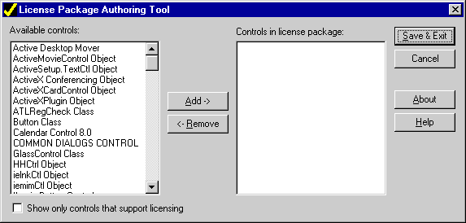
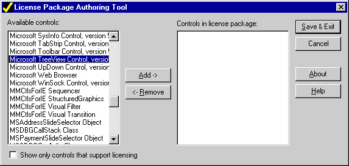

| ||||||
This article explains the licensing strategy for Microsoft® ActiveX® Controls. In addition, it describes the functionality that must be implemented on an ActiveX control in order to support this strategy.
Most Microsoft® ActiveX® Controls should support design-time licensing and run-time licensing. (The exception is the control that is distributed free of charge.) Design-time licensing ensures that a developer is building his or her application or Web page with a legally purchased control; run-time licensing ensures that a user is running an application or displaying a Web page that contains a legally purchased control.
Design-time licensing is verified by control containers such as Microsoft Visual Basic®, Microsoft Access, or Microsoft Visual InterDev™. Before these containers allow a developer to place a control on a form or Web page, they first verify that the control is licensed by the developer or content creator. These containers verify that a control is licensed by calling certain functions in the control: If the license is verified, the developer can add it.
Run-time licensing is also an issue for these containers (which are sometimes bundled as part of the final application); the containers again call functions in the control to validate the license that was embedded at design time.
Microsoft Internet Explorer 4.0 is another type of container. Like the other containers, Internet Explorer 4.0 also calls functions in the control to verify that it is licensed. However, unlike Visual Basic or Microsoft Access, which embed ActiveX Controls within the binary code of their application's executable files, Internet Explorer 4.0 uses a different model. This unique model is a necessary response due to:
Because any Internet Explorer 4.0 user can view the HTML source code for a given Web page, and because an ActiveX control is copied to a user's computer before it is displayed, a level of indirection is required to "hide" the license for an ActiveX control from the user. This prevents an Internet Explorer 4.0 user from pirating and reusing a control that they have not purchased. Microsoft addresses these run-time licensing issues with a new file called the license package file (or LPK file). This file can be included in any HTML page by using the OBJECT object. For more information about .lpk files, their use, and their format, see "The License Package File."
The functions that support design-time and run-time licensing are members of the IClassFactory2 interface. Any ActiveX control that supports licensing must support and implement this interface (an extension of the IClassFactory interface). The IClassFactory interface supports the CreateInstance and LockServer methods. (IClassFactory::CreateInstance is called by a container to instantiate a control; IClassFactory::LockServer is called by a container to lock the control into memory once it is instantiated.) The IClassFactory2 interface built upon IClassFactory by adding three new methods: GetLicInfo, RequestLicKey, and CreateInstanceLic. IClassFactory2::GetLicInfo retrieves a structure that specifies the licensing capabilities for an ActiveX control. IClassFactory2::RequestLicKey retrieves a license key. IClassFactory2::CreateInstanceLic instantiates the ActiveX control using the license key (which was retrieved by calling IClassFactory2::RequestLicKey).
If you've created your control with the Microsoft Foundation Class Library (MFC), the IClassFactory2 interface is wrapped by the COleObjectFactory class. In addition to handling licensing issues, COleObjectFactory handles object registration as well.
This article provides general information about design-time and run-time licensing for ActiveX Controls. In addition, it provides specific details about run-time licensing for Internet Explorer 4.0. The samples in this article are based on a sample MFC control. For more information about non-MFC controls, refer to the OLE documentation that is part of the Microsoft Platform SDK.
Design-time licensing is verified by ActiveX control containers such as Microsoft Visual Basic, Microsoft Access, and Microsoft Visual InterDev. These containers verify that a control is licensed to the developer by calling IClassFactory2::CreateInstanceLic and passing a NULL value for the bstrKey parameter. The corresponding code found in the control's implementation of CreateInstanceLic verifies that the control is licensed. In most cases, this is done by checking for a license (.lic) file and examining the contents of the first line that appears in this file (the contents of this line are sometimes called the license key).
In the sample control, which was created with MFC, the IClassFactory2 interface's functions are wrapped by the COleObjectFactory class. The implementation of the COleObjectFactory::IClassFactory2 interface is found in the MFC Olefact.cpp source file. The following excerpt from this file shows the MFC implementation of the IClassFactory2::CreateInstanceLic method.
STDMETHODIMP COleObjectFactory::XClassFactory::CreateInstanceLic(
LPUNKNOWN pUnkOuter, LPUNKNOWN /* pUnkReserved */, REFIID riid,
BSTR bstrKey, LPVOID* ppvObject)
{
METHOD_PROLOGUE_EX(COleObjectFactory, ClassFactory)
ASSERT_VALID(pThis);
*ppvObject = NULL;
if (((bstrKey != NULL) && !pThis->VerifyLicenseKey(bstrKey)) ||
((bstrKey == NULL) && !pThis->IsLicenseValid()))
return CLASS_E_NOTLICENSED;
// Outer objects must ask for IUnknown only.
ASSERT(pUnkOuter == NULL || riid == IID_IUnknown);
// Attempt to create the object.
CCmdTarget* pTarget = NULL;
SCODE sc = E_OUTOFMEMORY;
TRY
{
// Attempt to create the object.
pTarget = pThis->OnCreateObject();
if (pTarget != NULL)
{
// Check for aggregation on object not supporting it.
sc = CLASS_E_NOAGGREGATION;
if (pUnkOuter == NULL || pTarget->m_xInnerUnknown != 0)
{
// Create aggregates used by the object.
pTarget->m_pOuterUnknown = pUnkOuter;
sc = E_OUTOFMEMORY;
if (pTarget->OnCreateAggregates())
sc = S_OK;
}
}
}
END_TRY
// Finish creation.
if (sc == S_OK)
{
DWORD dwRef = 1;
if (pUnkOuter != NULL)
{
// Return inner unknown instead of IUnknown.
*ppvObject = &pTarget->m_xInnerUnknown;
}
else
{
// Query for requested interface.
sc = pTarget->InternalQueryInterface(&riid,
ppvObject);
if (sc == S_OK)
{
dwRef = pTarget->InternalRelease();
ASSERT(dwRef != 0);
}
}
if (dwRef != 1)
TRACE1("Warning: object created with reference of %ld\n", dwRef);
}
// Cleanup in case of errors.
if (sc != S_OK)
delete pTarget;
return sc;
}
When the license key (bstrKey) is NULL, this function calls the COleObjectFactory::IsLicenseValid member function to determine whether a valid design-time license exists for the control. The implementation of COleObjectFactory::IsLicenseValid is also found in the MFC Olefact.cpp source file. The following excerpt from this file shows the MFC implementation of this function.
BOOL COleObjectFactory::IsLicenseValid()
{
if (!m_bLicenseChecked)
{
m_bLicenseValid = (BYTE)VerifyUserLicense();
m_bLicenseChecked = TRUE;
}
return m_bLicenseValid;
}
Initially, the member variable, m_bLicenseChecked, is false. As a result, the COleObjectFactory::VerifyUserLicense member function is called. This function is one of three COleObjectFactory functions that are usually overridden by the ActiveX control developer. In the case of the sample control, this function was overridden and implemented in the Timectrl.cpp module. It was implemented as follows:
BOOL CTimeCtrl::CTimeCtrlFactory::VerifyUserLicense()
{
return AfxVerifyLicFile(AfxGetInstanceHandle(), _szLicFileName,
_szLicString);
}
The AfxVerifyLicFile function returns a Boolean value if the license file identified by the _szLicFileName parameter exists and if the first line of this file contains the license string (or key) specified by the _szLicString parameter. These parameters are static variables that appear at the beginning of the Timectrl.cpp file.
// Licensing strings.
static const TCHAR BASED_CODE _szLicFileName[] = _T("time.lic");
static const WCHAR BASED_CODE _szLicString[] =
L"Copyright (c) 1996 ";
Note that the sample control uses the default implementation of COleObjectFactory::VerifyUserLicense, which was generated by the ControlWizard. It is possible that a control developer may want to implement a more secure licensing scheme. For example, a developer might want to embed the license key at a location other than the first line in the licensing file. In this case, the implementation of VerifyUserLicense would not call AfxVerifyLicFile; instead, it would contain code that parsed the file as required to extract the embedded key.
Run-time licensing is similar for containers such as Microsoft Visual Basic or Microsoft Access; however, as stated in the introduction, run-time licensing is handled differently by Internet Explorer 4.0. This section will first describe run-time licensing for general containers (such as Visual Basic or Microsoft Access) and will conclude with a description of run-time licensing for Internet Explorer 4.0.
There are two points in time when run-time licensing is an issue for a container such as Microsoft Visual Basic: the first is during the creation of the application's executable file; the second is immediately prior to running the application. In both instances, the container calls one or more of the IClassFactory2 methods found in the control in order to determine whether a valid license exists.
When you build an executable file with Visual Basic for an application that uses ActiveX Controls, Visual Basic attempts to embed copies of each control's license keys within the executable file. The container retrieves a license key by calling the IClassFactory2::GetLicInfo method found in each control. This function returns the address of a structure, LICINFO, whose members specify whether a run-time key is available and whether a full machine license exists.
typedef struct tagLICINFO
{
ULONG cbLicInfo;
BOOL fRuntimeKeyAvail;
BOOL fLicVerified;
} LICINFO;
If Visual Basic determines that the container does support run-time licensing (that is, if the LICINFO.fRuntimeKeyAvail member was set to TRUE), it then calls the IClassFactory2::RequestLicKey method to retrieve a copy of the key, which it then embeds in the executable file.
At run time, a container calls IClassFactory2::CreateInstanceLic for each control that is part of the application or Web page that it is displaying. Unlike the earlier call to CreateInstanceLic (at design time, when the container passed a NULL value as the fourth parameter, bstrKey), the container passes a valid string that contains the embedded license key. This allows the control to run on any user's computer (whether or not they are licensed) as long as the embedded key matches the key found in the control.
In the sample ActiveX control, the IClassFactory2 interface's functions are wrapped by the COleObjectFactory class. The implementation of the COleObjectFactory::IClassFactory2 interface is found in the MFC Olefact.cpp source file. The following excerpt from this file shows the MFC implementation of the IClassFactory2::GetLicInfo method.
STDMETHODIMP COleObjectFactory::XClassFactory::GetLicInfo(
LPLICINFO pLicInfo)
{
METHOD_PROLOGUE_EX(COleObjectFactory, ClassFactory)
ASSERT_VALID(pThis);
BSTR bstr = NULL;
pLicInfo->fLicVerified = pThis->IsLicenseValid();
pLicInfo->fRuntimeKeyAvail = pThis->GetLicenseKey(0, &bstr);
if (bstr != NULL)
SysFreeString(bstr);
return S_OK;
}
COleObjectFactory::GetLicInfo calls two other member functions: COleObjectFactory::IsLicenseValid and COleObjectFactory::GetLicenseKey. The first function is part of the class definition found in Olefact.cpp; the second function was overridden by the sample control and appears in the Timectl.cpp file. The code for COleObjectFactory::IsLicenseValid appears as follows:
BOOL COleObjectFactory::IsLicenseValid()
{
if (!m_bLicenseChecked)
{
m_bLicenseValid = (BYTE)VerifyUserLicense();
m_bLicenseChecked = TRUE;
}
return m_bLicenseValid;
}
The COleObjectFactory::IsLicenseValid member function, in turn, calls COleObjectFactory::VerifyUserLicense, another function that was overridden by the control. (The "Implementing Design-Time Licensing with MFC" section contains a listing for VerifyUserLicense.) In the sample control, this function simply checks the first line of the .lic file and verifies that it contains the specified license key.
After the sample control calls COleObjectFactory::VerifyUserLicense, it then calls the COleObjectFactory::GetLicenseKey member function. This function is overridden by the sample control and is found in the Timectl.cpp file. The code for COleObjectFactory::GetLicenseKey appears as follows:
BOOL CTimeCtrl::CTimeCtrlFactory::GetLicenseKey(DWORD dwReserved,
BSTR FAR* pbstrKey)
{
if (pbstrKey == NULL)
return FALSE;
*pbstrKey = SysAllocString(_szLicString);
return (*pbstrKey != NULL);
}
The CTimeCtrl::CTimeCtrlFactory function retrieves a copy of the license key, which the container can store in the appropriate location. (In the case of Visual Basic or Microsoft Access, the key is embedded in the application's executable file.)
Like the other containers, Internet Explorer 4.0 also calls the IClassFactory2 methods to verify that an ActiveX control is licensed. However, unlike Visual Basic or Microsoft Access, which embed ActiveX Controls within the binary code of their application's executable files, Internet Explorer 4.0 uses a different model. This unique model is a necessary response to the following factors:
Because any Internet Explorer 4.0 user can view the HTML source code for a given Web page, and because an ActiveX control is copied to a user's computer before it is displayed, a level of indirection is required to "hide" the license for an ActiveX control from the user. This prevents an Internet Explorer 4.0 user from pirating and reusing a control that they have not purchased. Microsoft addresses these run-time licensing issues with a new file called the license package file (or LPK file).
A license package is stored as a license package (.lpk) file. From a very simplistic perspective, this file can be thought of as an array of ActiveX control CLSIDs and license keys. The file has the following format.
| Element | Description |
| .lpk header | Header that identifies the file type: "LPK License Package" |
| Copyright text or other legal statement | "Legalese" to dissuade casual copying of .lpk files |
| LPK version GUID | In plain-text on a line by itself. This GUID is used to mark the beginning of the real license package data; it is also used to identify the LPK file format version. |
| Uuencoded(Base64) license package | struct {
UUID uuidLPKFile; // unique per LPK
DWORD dwLicenses; // number of licenses in the file
LICENSEPAIR aLicenses[]; // array of license pairs
} LICENSEPACKAGE;
struct {
CLSID clsid; // clsid of object
DWORD cchLic; // number of characters in the license
WCHAR ach[]; // license (saved as UNICODE characters)
} LICENSEPAIR;
|
The ActiveX License Manager is a component of Internet Explorer 4.0 found in the Licmgr10.dll file. This component parses an .lpk file and extracts the license key for each corresponding CLSID in the file.
At run time, when Internet Explorer 4.0 is rendering an HTML page that contains ActiveX Controls, the License Manager calls the IClassFactory2::CreateInstanceLic method, passing the license key that it extracted from the .lpk file in order to verify that a control is licensed. If the license key matches the control's license, the control will be rendered on the page.
An HTML author can embed a license package in any HTML page by using the OBJECT object, a CLSID that identifies the object as a license package, and a PARAM object that specifies the relative location of the license package file with respect to the HTML page.
<OBJECT CLASSID="clsid:5220CB21-C88D-11cf-B347-00AA00A28331">
<PARAM NAME="LPKPath" VALUE="time.lpk">
</OBJECT>
The contents of the .lpk file are parsed by the license manager object. Only one .lpk file can be included in a given HTML page. (If more than one .lpk file is included in a page, Internet Explorer 4.0 ignores all but the first.)
The Internet Client SDK ships with an executable file named Lpk_Tool.exe that you can use to generate license package files. This file is copied to the \bin subdirectory found in the SDK.
The application is actually simple to use. When you start the application, it displays a combo box that lists all of the ActiveX Controls currently running on your computer.

The next step requires that you choose the controls that you want to display on a given HTML page. You choose a control by highlighting it in the combo box and then clicking the Add button.

Once you've selected all the controls that you want to display on a given page, you can create and save the actual .lpk file by clicking the Save & Exit button. (This causes the application to display the File Save dialog box, which allows you to specify the path and file name.)
HTML authoring tools will make it easy to create HTML pages with embedded ActiveX Controls. Such tools should be responsible for creating the .lpk license package for licensed controls used on a page or on a Web site. Since there may be a one-to-many mapping between LPKs and HTMs, this may be more difficult for page-based authoring tools as opposed to Web-based authoring tools (for example, Microsoft FrontPage™).
Clearly, tool support is necessary for Notepad HTML authors as well. The solution is a simple GUI tool that lists all controls that are installed on a computer with design-time licenses. The tool allows a user to create an .lpk license package by selecting which controls should be included in the package. A second tool could parse HTML pages and create an .lpk file for all the controls that require licensing.
Did you find this topic useful? Suggestions for other topics? Write us!
© 1999 Microsoft Corporation. All rights reserved. Terms of use.